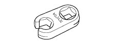
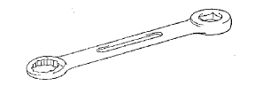
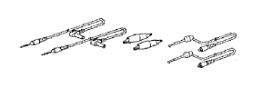

ECD SYSTEM > P0110 > Preparation

| Deep socket wrench 19 mm | - |
| Heater | - |
| Non-residue solvent | - |
| Ohmmeter | - |
| Thermometer | - |
| Torque wrench | - |
| Vacuum pump | - |
 | 09017-1C100 | Union Nut Wrench 10mm | - |
 | 09017-1C220 | Ball joint Lock Nut Wrench 22mm | - |
 | 09082-00040 | TOYOTA Electrical Tester | - |
 | (09083-00150) | Test Lead Set | - |